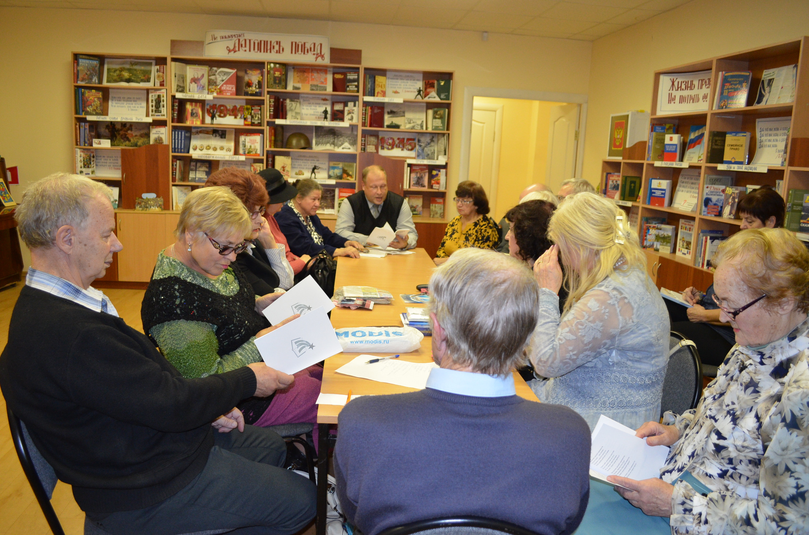

Рождение клуба "Элегия" на литературной карте Воронежа
12.10.2017
На базе библиотеки №17 г. Воронежа (ул. Переверткина, 49) 12.10.2017 г. состоялось официальное открытие нового литературно-музыкального клуба г. Воронежа. Инициатором выступила член Воронежской городской общественной организации «Союз писателей «Воинское содружество» Диточенко Светлана Сергеевна. Собрались поэты разных поколений, ранее участвующие в работе литературных клубов «Орион» г. Воронежа, «Созвездие» пос. Сомово и других объединений.
Стихи поэтов носят часто глубоко исповедальный характер, не всегда они светлы и радужны, так как отражают грани нашей жизни. В этой связи из 14 возможных вариантов названия клуба был выбран один – «Элегия»1. В работе клуба приняли участие представители воронежских и областных писательских организаций: председатель правления ВГОО «СП «Воинское содружество» Кашкин Сергей Николаевич и член правления ВООО «Союз военных писателей» Лобачев Виктор Алексеевич. Собравшиеся поэты прочитали свои произведения – стихи и афоризмы. Понравились прочитанные стихи Михайловой В.И., Быковой Л.В., Диточенко С.С., Часовских Н.П.
Кашкин С.Н. рассказал о возглавляемой им писательской организации, представил собравшимся содержание журнала «Литературное созвездие» №5 за 2017 год, редактором которого он является, и прочитал стихи из этого журнала.
Собравшиеся пожелали встречаться ежемесячно в 12.00 по четвергам, приглашать талантливую молодежь, читать свои новые и ранее изданные произведения. Кашкиным С.Н. были намечены планы совместных мероприятий на базе библиотеки с заведующей Анисимовой Л.А.
1Эле́гия (греч. ελεγεια) — жанр лирической поэзии; стихотворение грустного содержания.